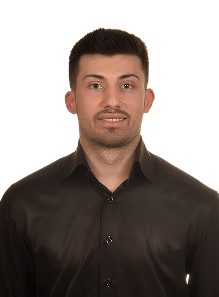

Cihan Demir
BİLGİSAYAR MÜHENDİSİ & YAPAY ZEKA MÜHENDİSİ
Ondokuz Mayıs Üniversitesi Bilgisayar Mühendisliği mezunuyum; şu anda Kastamonu Üniversitesi'nde Yapay Zeka alanında yüksek lisansımı sürdürüyorum. Çalışmalarımın merkezinde bilgisayarlı görü, derin öğrenme ve LLM tabanlı uygulamalar yer alıyor — bu alanlarda görüntü sınıflandırma, nesne tespiti, tıbbi görüntü analizi ve RAG tabanlı doküman asistanı projeleri geliştiriyorum.
Yapay zeka modellerini yalnızca akademik bir çıktı olarak değil; FastAPI, MongoDB ve React gibi araçlarla uçtan uca ürünleşmiş sistemler olarak inşa etmeye önem veriyorum. Model doğruluğundan son kullanıcıya ulaşan ürüne kadar tüm süreci sahiplenme anlayışıyla çalışıyorum.
Bilgisayarlı görü, LLM uygulamaları ve AI tabanlı ürün geliştirme üzerine konuşmaktan veya iş birliği yapmaktan memnuniyet duyarım.
Email: cihand7@outlook.com
Telefon: +90 530 449 92 37
Eğitim
Bilgisayar Mühendisliği Yüksek Lisans
Kastamonu Üniversitesi | 2024 - Devam Ediyor
Makine Öğrenmesi, Biyoinformatikte Derin Öğrenme ve Görüntü İşleme üzerine odaklanıyorum. TEKNOFEST Uluslararası İHA ve Havacılıkta Yapay Zeka kategorilerinde aktif çalışmalar yürüttüm.
Bilgisayar Mühendisliği Lisans
Ondokuz Mayıs Üniversitesi | 2019 - 2023
Makine Öğrenmesi, Algoritmalar, İşletim Sistemleri ve Veri Yapıları gibi temel mühendislik derslerini başarıyla tamamladım. TEKNOFEST Orta İrtifa Roket Takımı'nda görev aldım.
İş Tecrübesi
Stajyer Mühendis
Yeşilırmak Elektrik Dağıtım A.Ş (YEDAŞ) | Temmuz 2023
Ağ ve siber güvenlik alanlarında deneyim kazandım. Ekibimle birlikte Blockchain teknolojisi üzerine AR-GE çalışması yürüterek, dört farklı cihazı entegre eden özel bir Ethereum ağı kurulumunu başarıyla gerçekleştirdim.
Projeler
Pulsify
Pulsify, KOBİ'lerin sipariş, kargo ve müşteri süreçlerini tek ekrandan AI destekli yönetmesini sağlayan operasyon platformudur. Google Gemini 2.5 Flash ile kargo gecikmelerini proaktif tespit eder, müşteri duygu durumunu gerçek zamanlı analiz eder. FastAPI + React + MongoDB stack'i üzerine inşa edilmiştir.
Github Reposu
DocTalk
FastAPI, React ve FAISS ile geliştirilmiş yapay zeka destekli doküman asistanı. Google Gemini API semantik arama ve belge analizi için kullanır.
Github Reposu
Teknofest Uluslararası İHA Yarışması
Görüntü işleme ve derin öğrenme ile hava-kara taarruz sistemleri için hedef tespiti. NVIDIA Jetson Nano ve Raspberry Pi 5 üzerinde YOLOv11 ile gerçek zamanlı nesne tanıma.
Beyin Tümörü Sınıflandırıcısı
MobileNetV2 mimarisi ve Keras kullanılarak MRI görüntülerinden tümör tespiti yapan derin öğrenme projesi.
Teknofest Orta İrtifa Roket Kategorisi Yer İstasyonu Yazılımı
C# ile geliştirilen, roketten gelen telemetri verilerini (konum, basınç, sıcaklık) gerçek zamanlı işleyen ve görselleştiren yer istasyonu arayüzü.
Yumuşak Oylama Topluluk Öğrenmesi Metodu Kullanılarak Ağ Saldırısı Tespitinin İyileştirilmesi BİLDİRİ
Enhancing Network Attack Detection Using Soft Voting Ensemble Learning Method.
Yazarlar: Cihan Demir, Kemal Akyol
Konferans: 19th International Conference on Engineering & Natural Sciences
(2026)
Bildiriyi Görüntüle
Grafen Takip Sistemi
FastAPI, React ve Mysql ile geliştirilmiş bir öğrenci takip sistemi.
Web Sitesi
Sertifikalar ve Eğitimler
Eğitim ve Uzmanlık Programları
Yapay Zeka ve Teknoloji Akademisi | 2025-2026
Yapay zeka, derin öğrenme, web geliştirme, proje yönetimi üzerine kapsamlı teorik ve pratik eğitim.
Veri Analizi Okulu | 2025-2026
Veri analizi, makine öğrenmesi, derin öğrenme üzerine kapsamlı teorik ve uygulamalı eğitim.
Sertifikalar ve Yetkinlik Kursları
Deep Learning A-Z Python ile Derin Öğrenme (Udemy) | 2024
Makine öğrenmesi temellerinden başlayarak derin öğrenme mimarilerine ve sektörde yaygın olarak kullanılan modellere uzanan kapsamlı kurs.
Temel Girişimcilik Eğitimi | 2026
Girişimcilik ekosistemi: Kullanıcı kazanımı, pazar analizi ve stratejik hedef kitle belirleme üzerine detaylı bir kurs.
Finans Eğitimi | 2026
Girişimcilikte mali sürdürülebilirlik: İşletme kurulum süreçlerinden stratejik finansal yönetim ve muhasebe altyapısına kadar uçtan uca finansal yetkinlik eğitimi.
Teknik Beceriler
Programlama Dilleri
- Python
- Java
- C#
- SQL
Yapay Zeka & Makine Öğrenmesi
- PyTorch
- Keras
- Scikit-Learn
- Ensemble Learning
Bilgisayarlı Görü
- OpenCV
- YOLO (YOLOv11)
- Görüntü İşleme
LLM & Üretken Yapay Zeka
- LangChain
- Google Gemini API
- FAISS (Vektör Veritabanı)
- RAG (Retrieval-Augmented Generation)
Backend Geliştirme & API
- FastAPI
- REST API
- MongoDB
Veri Analizi & Bilimi
- NumPy
- Pandas
- Matplotlib
- Excel
- SPSS
Araçlar & Platformlar
- Git & GitHub
- Docker
- Linux
- Raspberry Pi 5
- NVIDIA Jetson Nano